文字
背景
行間


SGH活動報告
THE FARM 観光・農業分野研修会


5月課題研究報告
全生徒が研究を行い、全生徒が２月の佐倉課題研究発表会で発表するスタイルは今年も同様です。
３学年は課題研究報告書の作成に取り組んでいます。
２学年は新しい研究班を作成し、今年の研究テーマを検討しています。
１学年はSDGsの視点からのガイダンスを積み重ね、社会の課題を探す活動をしています。今回掲載した写真は、ＫＪ法による課題発見学習の様子です。
令和２年度をもちまして５年間のSGH事業は終了しましたが、今年度からは文科省のもとSGHネットワーク事業に参加し、積極的な外部交流を維持します。
本校の課題研究文化は生徒の間に根付いています。この貴重な文化を絶やさぬよう今年も挑戦を続けます。
Cecilien Gymnasium（ドイツ）とのオンライン交流会
4月13日（火）15:50～16:35 ドイツの交流校、ツェツィリアン・ギムナジウムの生徒と本校の３年生10名がZoomによりオンライン交流しました。現地は午前８時50分、歴史の授業の中で、本校の３年生２組によるSGH課題研究発表（佐倉の観光、ヘルプマーク）をライブで聞いていただき、質問やコメントをもらいました。進行は国際交流委員が務めました。短い時間でしたが、ライブでお互いの顔を見ながら交流できるというのはやはり楽しいものです。コロナ禍に負けず、これからもこのような活動を通して、更に国際感覚を身に付けていきます。

 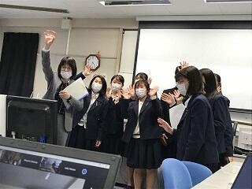
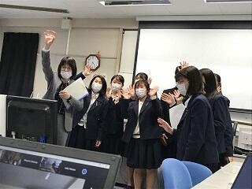
探究甲子園出場 3/21


2021年度国際研究発表会（千葉大学主催）参加
令和２年２月１４日（日）１年生のSGH課題研究２グループ７名がオンラインで行われた国際研究発表会に参加しました。２月８日から１４日までアジア、ASEAN諸国の大学教員、学生、高校生も参加しての研究発表会において、５分のナレーション付きスライド発表を視聴してもらった後、オンライン参加者によるQ&Aが行われました。
イギリス Hllyport College オンライン交流会

令和2年2月27日(土)イギリスの交流校ホリポート・カレッジの日本語クラブの生徒と佐倉高校1年生９名がGoogle Meetでのオンライン交流をしました。こちらは土曜日の19:00～20:00イギリスは朝10:00～11:00の時間帯に各自が家から参加しました。1月からショートビデオでメッセージを交換していましたが、今回初めてオンラインで顔を合わせることができました。
ホリポートのGee先生がファシリテーターを務めてくださり、簡単な自己紹介やゲーム、付箋チャット機能を使った会話をしました。これからも定期的にこのようなオンラインミーティングを開く予定です。
佐倉高校課題研究発表会開催
１．SSH・SGH合同開催
２．全２２会場に分かれて、１・２学年の課題研究班１６０班が全班発表。
３．普通科はGoogleスライド発表、理数科はポスター発表
４．代表発表班のオンライン中継
５．質疑応答の当たり前化を目ざす進行
今まで様々な発表体験を積み重ねたことにより、皆堂々としたプレゼンテーションを
披露してくれました。


課題研究「学びの発表会」開催


１年英語発表班最終仕上げ
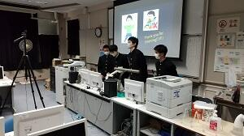
 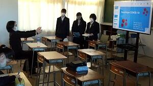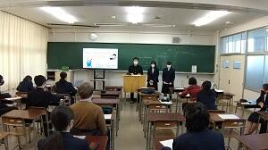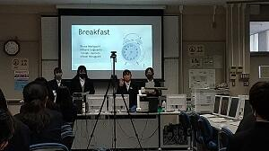
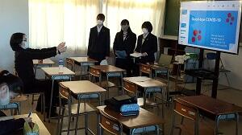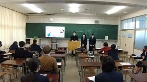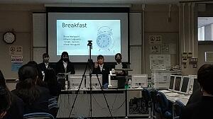
2学年課題研究クラス発表会開催


 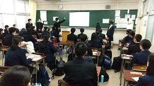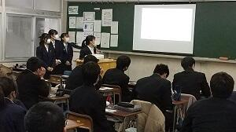
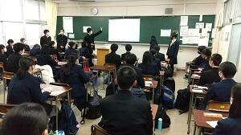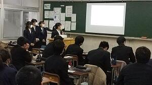


１学年課題研究クラス発表会開催


SGH 2020全国高校生フォーラム開催
【Title】 Infectious Diseases and Climate Change
Though both infectious diseases and climate change are crises, the world is doing nothing to fundamentally solve them. So, we tried to find an underlying factor of these two crises because we knew that social issues are closely related to each other. After careful consideration, we’ve found that meat consumption is one of those. And we think that we need to change our daily diets. So, we made a poster that shows how meat consumption affects these crises and distributed them. In addition, we did a campaign “plant-based photo contest” to encourage taking actions and to share our idea.
夢の図書館ワークショップ
 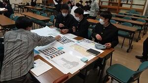
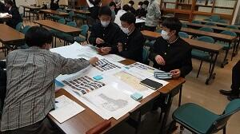
令和２年度 海外理解促進のための講演会
11月20日(金)、１年生が、海外経験豊富なお二人の講師のお話を伺いました。稲葉健一氏（演題「グローバル化と国際協力」）は、青年海外協力隊員としてパラグアイでコミュニティー開発に携わった経験や、大学、会社勤めを経て青年海外協力隊に応募するまでの経緯を中心に話されました。現地での生活や地元の様々な立場の人とのコミュニケーションから、何が必要かを考え、伝え方を考え、小さな改善を積み重ねていくことの重要性や、「無い」からできないと諦めてはいけないことなどを話していただきました。遠藤恭一氏（演題「未来を切り拓く力とは－グローバルかとコロナ禍後の世界－」）は、人生100年時代、１つの会社や日本国内のみで働くことは益々少なくなっていくであろう時代、AIにはできない「次に何をするか、問題は何か」を探す力が問われる時代に向けてどう備えるかというお話でした。自ら意識してより広い世界を見ようとする姿勢や、「何を考えているのか、なぜそう思うのか」言葉で自己主張ができる習慣をつけること、少し雑でもよいから臆せず行動してみること等、大変刺激を受ける内容でした。講演後の質疑応答も活発に行われ、考えを深める機会となりました。
また、この講演会に先立ち、11月17日(火)から在籍することになったスイスからの留学生が1年生に紹介されました。来年7月末まで滞在しますのでよろしくお願いします。


SGH講演会「世界についてのステレオタイプをどう克服するか」
 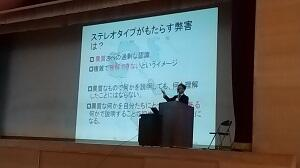
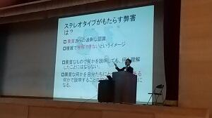 こんなプレゼンテーションは嫌だ！
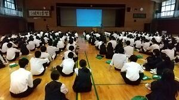

課題研究「献血を広めよう！」班プロジェクト
10月1日（木）、課題研究班「献血を広めよう！」が主催する献血イベントが、日本赤十字社千葉支社の協力のもと、本校で開催されました。班員５人は、１年次から献血をテーマに研究を続け、本年２月に日本赤十字社と連絡を取り合い、学校側に献血イベント開催の協力を求めてきました。近年、献血協力者は減少傾向にあり、かつコロナ禍にも襲われ、一時は開催が危ぶまれましたが、生徒たちはあきらめることなく計画を進め、開催に至りました。５０人以上の生徒から献血希望の申し出があり、予定時間を大幅に超過して採血がおこなわれました。生徒は今後イベント内容や参加者の声を精査し、研究発表にまとめていきます。どのような内容になるか楽しみです。
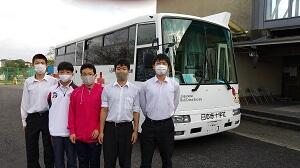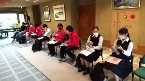「〇〇を考える会」と第２回SGH運営指導協議会
10月6日（火）、6・7限の2時間にわたって「〇〇を考える会」と題した「知的対話」イベントが開催されました。普通科1・2学年計14クラスを解体し、各学年が均等になるようにランダムに組み合わせ、ほとんど初対面同士の6人グループを編成しました。その中で2年生がファシリテーターとなって討議を回すという新たな試みです。テーマは、オリパラの開催やレジ袋有料化の是非、防災やSNSや政治意識、地域の課題やオンラインなど今年話題となった事象を切り口とし、対話を深めていく形をとりました。教員側の事前設定には反省すべき点が多々確認されましたが、ファシリテーターを務めた2年生の奮闘により、実りある「知的対話」が実現しました。アンケート結果の速報からも、こ日の一連のプロセスが、「思考力」「判断力」「表現力」の育成につながることが確認できました。
また同日には、SGH運営指導協議会が開催され、協議委員の先生方にICT・オンラインを中心とした今年度の取組を検証していただくとともに、この日のイベントを見学していただき、貴重なご意見を寄せていただきました。


佐倉市役所と佐倉を考えるワークショップ

第1回「気付く・探る・考える」講演会開催
明治大学学生とオンライン交流会
 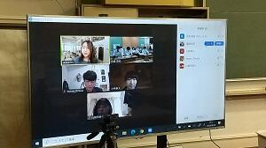
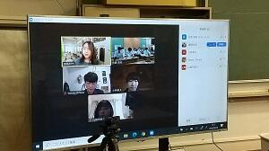 SGH国内グローバル研修（英語オンライン研修）
１日目：SDG's概要、Zero Hunger（飢餓撲滅）、Food & Energy（食べ物の在り方、再エネルギーについて）
２日目：Speech Practice（スピーチ発表練習）、Speech Skills（良いスピーチのコツ、各自の発表 Ｑ＆Ａ）
２日目のスピーチでは、SDG's目標から、各自が選んだものについて「何が問題なのか」、「どうしたら少しでも解決に向かうのか」、「今できることは何か」などを発表しました。参加者はみんな1日目に習ったことや学校の授業で扱った内容、調べたデータや自分の考えを盛り込んでおり、声量やジェスチャー、アイコンタクトなどにも気を遣った良い発表ができました。
 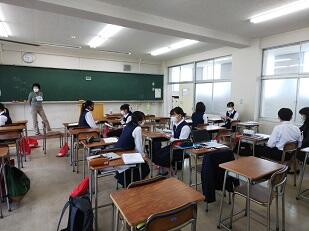
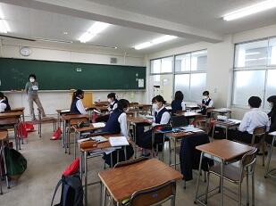 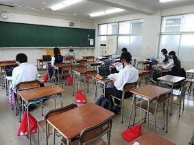
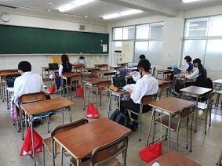 東京大学学生とオンライン交流会開催
22日（火）、東京大学学生との「知的対話」イベントが、オンラインで開催されました。本校からは、1・2学年の各クラス代表1名＆生徒会役員の計17名が参加しました。東京大学からは3年（医学部）、3年（農学部）、2年（文Ⅰ）、2年（文Ⅱ）、1年（理Ⅰ）とバラエティーに富んだ5名の学生が参加しました。
前半は、本校生徒が各自1問ずつ、東大生に質問や悩みをぶつけ、助言をいただきました。
後半は、3グループに分かれ、「同調圧力」「オンライン」「判断基準」のテーマでディスカッションを行いました。2時間余の計画でしたが、会話が盛り上がり、3時間を超えるイベントとなりました。「知的対話」の楽しさを十分感じられる濃密な時間となりました。

千葉大学環境ISO学生委員会とオンライン交流
9月3日（木）、5日（土）の両日、本校１・２年生と千葉大学環境ISO学生委員会の皆さんとの間で、Zoomを使い、オンライン交流が実現しました。本校の参加生徒は環境問題とオンライン教育を研究テーマとする研究班８班で、節水や木材の有効利用、プラスチックゴミ削減や空き缶のポイ捨て解決、オンライン教育の高校・大学の比較などのテーマで発表を行い、大学生の皆さんから適格かつ建設的な助言をいただきました。また課題研究に取り掛かったばかりの１年生は、環境をテーマとする自由な討議をおこない、大きな刺激を得ることができました。
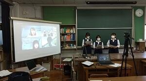 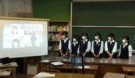
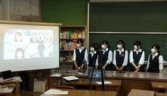

Sakura High School SGH Presentation
8月24日(月)、2年生の課題研究英語発表班80名が、Sakura High School SGH Presentations を開催しました。課題研究の年間スケジュールにおいては中間発表という段階で、夏休みの研究調査を英文スライドでまとめ、7分間の英語スピーチで伝えました。今回の特徴はアドバイザーとして3名の東京大学留学生がオンラインで参加してくださった点です。2人は国内から、1人は帰国中の香港から生徒にアドバイスをくださいました。TV会議システムを利用し、ライブで留学生に配信し、プレゼンテーションもアドバイスも80名の生徒で共有しました。また対面ゲストとして県内で活躍するALTの協力もいただき、刺激的な発表会を開催することが出来ました。コロナ禍により対面での外部交流が困難な中、本校はオンライン交流の実績を着実に積み上げてきました。今回、研究発表会のライブ中継を経験したことにより、秋冬のオンライン発表会に向けて着実な成長を遂げることができました。
Topic | |
1 | Welcome to Sakura |
2 | Revival of the Shopping Street |
3 | Increase the Voting Rate among the Young |
4 | Salt & Vinegar |
5 | Help Mark |
6 | Emerging Infectious Diseases and Climate Change |
7 | Promoting Tourism in Sakura |
8 | No More Bullying on the Internet |


 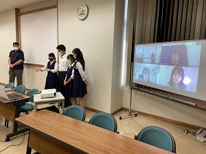
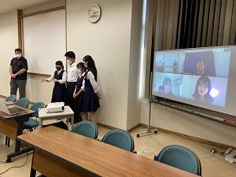
 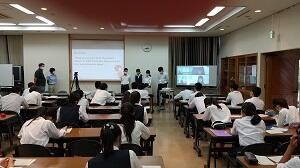
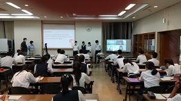
佐倉市風見鶏の里を訪問

 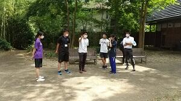
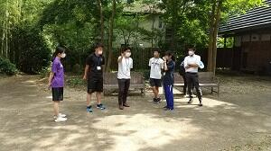
SGH全国事務説明会オンライン開催
浦和第一女子高校とオンライン交流会
先月の第１回のテーマは『オンライン教育』
今回のテーマは『地域活性化』と『環境問題』の２本立てで行いました。
テーマごとに、各校３～４名の参加者を集い、自らの課題研究とリンクさせながら、情報交換と質疑を行います。生徒たちの多くは自宅から参加し、時間と距離の壁を越えた思考と対話が実現しました。今後は、課題研究のオンライン発表も構想しています。
７０の研究班が研究テーマをプレゼン（２学年）
 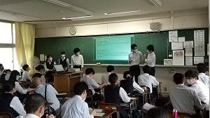
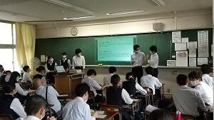 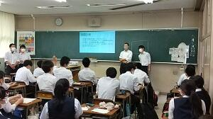
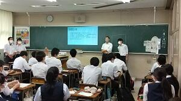 １学年研究テーマ検討中
１学年「１分間スピーチ」全生徒が興味・関心に応じた研究テーマを発表しました。
２学年「研究計画作成」各班が今後の研究計画を立て、具体的な調査・研究に入ります。
３学年「課題研究報告書」３年間の研究の総まとめが完成しました。


SGH・課題研究進行中
久しぶりのHP更新になりますが、コロナ禍においてもオンラインを活用し、課題研究は着実に進展しています。
３学年：休業中にオンラインでデータをやりとりし、課題研究報告書の提出がほぼ完了しています。
２学年：５月上旬、研究班が再始動し、研究テーマの再設定を実施しました。
１学年：休業中に、オンラインでガイダンスを実施。現在も動画配信とGoogleスライドを組み合わせて探究の手法を学習中。
現在、探究学習はすべてGoogle classroomを通じて情報提供しています。一例として、本日の授業案内を掲載します。

デュッセルドルフ大学生来校


国際研究発表会
 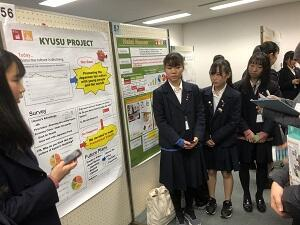
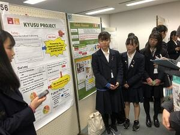 １学年クラス交流ポスター発表会


ＳＧＨ課題研究「互いの研究を深め合う発表会」
 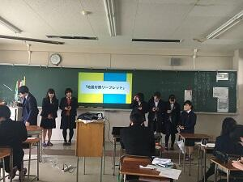
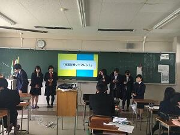


 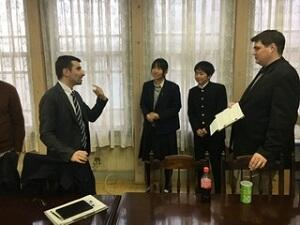
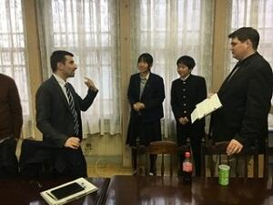 GLアクテイブ講座『ビジネスモデルを学ぼう』
1月9日（木）、GLアクテイブ講座『世界の市場を視野に入れたビジネスモデルについて学ぼう』が、本校で開催されました。講師にグローバルなビジネスを展開なさってる寒郡茂樹さんをお招きし、講演と熱心な質疑応答がおこなわれました。ドイツ文化、デュッセルドルフの街並み紹介に始まり、「ボンサイ」を主にしたビジネス展開、起業の魅力など、経験者でしか感じとることができない生の声を生徒に伝えていただきました。
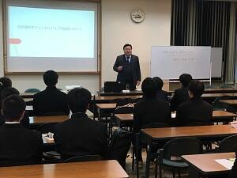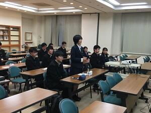
SGHオランダ海外研修報告会


全国高校生フォーラム2019
 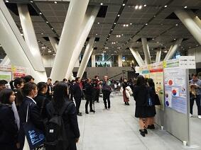
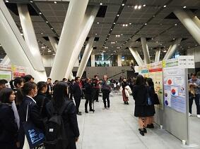 第4回 関東・甲信越静地区高校生探究学習発表会


マレーシア学校との交流会


１学年、探究学習「小さな発表会」
 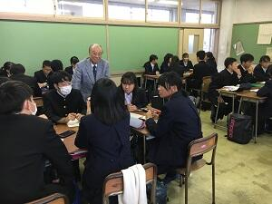
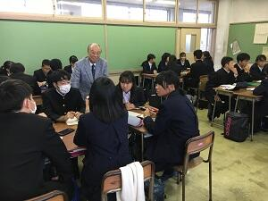
オランダ海外研修帰国
 11月17日(日)、オランダ海外研修を終えた５名が無事に帰国しました。長時間のフライトによる疲れも見せず、爽やかな表情をしていました。この研修中、体調を崩した生徒が一人もいなく、かなり充実した研修になったようです。後日行なわれる報告会が楽しみです。
11月17日(日)、オランダ海外研修を終えた５名が無事に帰国しました。長時間のフライトによる疲れも見せず、爽やかな表情をしていました。この研修中、体調を崩した生徒が一人もいなく、かなり充実した研修になったようです。後日行なわれる報告会が楽しみです。 オランダ海外研修８日目


海外理解促進のための講演会

オランダ海外研修７日目
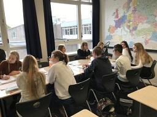

 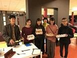
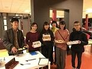 オランダ海外研修６日目


オランダ海外研修５日目


オランダ海外研修４日目
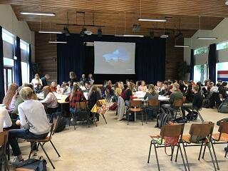


オランダ海外研修３日目

 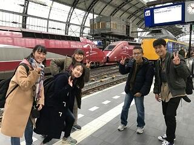
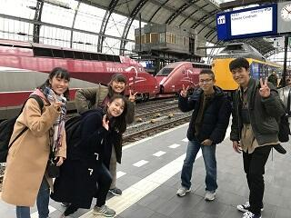 オランダ海外研修２日目


 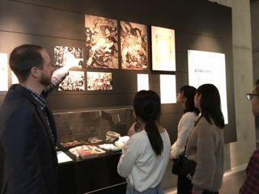
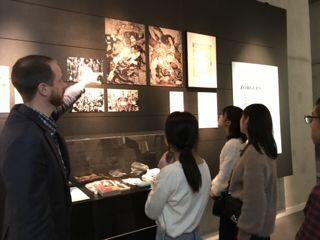 オランダ海外研修現地に到着
オランダ海外研修出発
11
 月7日,オランダ海外研修に１年生５名が出発いたしました。空港には鹿山会の福田様、長谷川様、谷藤様も見送りに来ていただき、激励の言葉をいただきました。オランダ派遣は平成９年から続く本校の伝統行事であり、欧州の高校生が集まるレベルの高いプログラムも用意されています。今年も大きな成果を上げて帰ってきてくれることを期待します。
月7日,オランダ海外研修に１年生５名が出発いたしました。空港には鹿山会の福田様、長谷川様、谷藤様も見送りに来ていただき、激励の言葉をいただきました。オランダ派遣は平成９年から続く本校の伝統行事であり、欧州の高校生が集まるレベルの高いプログラムも用意されています。今年も大きな成果を上げて帰ってきてくれることを期待します。 ＧＬアクティブ『東京外国語大学』
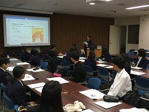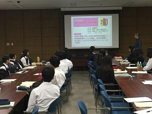
ＧＬ探究『佐倉小学校で授業実践』
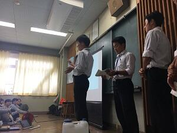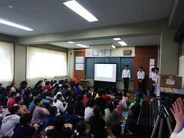
GLアクティブ『東京大学研修』
前半は2年生は自らのグループの課題研究について、途中経過を発表し、阿古准教授から講評をいただきました。研究を進めている2年生のみならず、1年生にとっても来年度の活動のよい指針になったと思います。その後、昼食を食べながら東京大学の学生から語学研修プログラムの体験を中心に学校生活についてプレゼンテーションを受けました。
GLアクティブ『筑波大学研修』
SGHオーストラリア・シンガポール海外研修報告会


ブリティッシュヒルズ英語研修 最終日
最後のLessonは、①British Sports ②Chess ③Snooker ④Lords of the Manor ⑤Volunteer English の５分野からのElectiveでした。英語やプレゼンの基本はもちろん、イギリスの文化や習慣にも触れられ、充実した３日間でした。
British Sports Chess Snooker
Lords of the Manor Volunteer English
ブリティッシュヒルズ英語研修 第２日
ブリティッシュヒルズ英語研修 第１日
広い敷地内に英国の風景が再現されています。まずは英語でチェックイン。
レッスン前にマントを羽織って宿舎内を探検。研修室と宿泊部屋があるBarracksの外観。
5グループに分かれて、Lesson1が始まりました。あちらこちらの部屋から笑い声が聞こえてきます。

Table Manners in English さあ、Course dinner で実践です。
シンガポール海外研修帰国
帰りは慣れない機中泊を体験し、疲れた表情も見られましたが、代表生徒からは「充実した研修になりました」と力強い言葉が述べられました。３日間の強行スケジュールの中、慌ただしい日程をこなし、多文化に触れ、現地の方の貴重なご意見をいただいてきました。何よりも全員が体調を崩すことなく、楽しい時間を過ごせたということで、中身がぎっしりと凝縮された良い研修となりました。これから研修のまとめへと入り、全校生徒の前で成果を披露することになっています。

シンガポール海外研修第３日


シンガポール海外研修第２日


シンガポール海外研修第１日


シンガポール海外研修出発

9月18日、ＳＧＨシンガポール海外研修の生徒17名が羽田空港より無事に出発いたしました。午前7時15分という早朝の集合時間にもかかわらず、全員が時間どおりに集合し、決意を新たに出発いたしました。課題研究の準備は万全です。成果を上げて帰ってきてくれることを期待します。
２年GL探究「夏休みの成果発表会」

１年GL探究発表ポスターの作り方

GLアクティブ「香取市の醸造文化・地域活性化」
GLアクティブ「浅草・東京ジャーミィ」
8月1日に実施したGLアクティブと同様の内容で、浅草では外国人観光客の方に対して各自の課題研究テーマに沿ったインタビューやアンケート調査を実施しました。
東京ジャーミィではガイドの方にお話をいただいた後、わずかな時間でしたが館内を自由に見学しました。
外国の方との関わりや異文化に触れることで、日本の文化を問い直すよい機会になったのではないでしょうか。


オーストラリア海外研修帰国

オーストラリア海外研修13日目
８月２日朝、ホストファミリーにナンボーまで連れてきもらい、そこでお別れとなりました。別れを惜しみ、涙を流す生徒の姿もありました。その後はバスでクイーンズランド大学へ。到着後、広大な敷地を案内してもらい、昼食後は図書館の一室で大学生に日本文化のプレゼンを行いました。大学生からの鋭い質問にもなんとか答えていました。その後は大学生との会話を楽しんだり、今後の課題研究に必要なアンケートやインタビュー調査を行いました。生物の教授からはオーストラリアには何故生物の固有種が多いかなど、レベルの高い説明を聞くことができました。


浅草現地調査＋東京ジャーミイ訪問
８月１日、ＧＬアクティブの国内研修の一環として、１・２年生の希望者を対象に『浅草現地調査＋東京ジャーミイ訪問』を実施しました。午前中は浅草周辺で外国人観光客に対しインタビュー調査を行いました。２年生は自分たちの課題研究に沿った調査を行い、１年生はその調査に協力しつつ、今後の研究テーマ設定に役立てるため各自で考えた内容でインタビューしました。午後は代々木上原にある日本最大のイスラーム寺院である「東京ジャーミイ」を訪問し、施設の方から説明を受けたり、施設内で販売されているハラールなどを見ることで、イスラームについての理解を深めることができました。本校のＳＧＨの目的にあるキーワードの１つに「多文化共生」があります。午前・午後ともに異文化に触れ、共生社会について考える良い契機となりました。今月２１日にも同様の研修が行われる予定です。

オーストラリア海外研修12日目
オーストラリア海外研修11日目
オーストラリア海外研修10日目


オーストラリア海外研修第９日

オーストラリア海外研修第６日

オーストラリア海外研修第５日
午前中のＥＳＬの授業を終えた後、午後はグループごとに日本文化の発表に向けての準備を行いました。順調に仕上がっています。

オーストラリア海外研修第４日


オーストラリア海外研修第３日


オーストラリア海外研修第２日


オーストラリア海外研修第１日

オーストラリア海外研修出発
７月２０日（土）期待と不安を胸に、生徒２０名が笑顔でオーストラリア海外研修に出発しました。成田国際空港（株）にご勤務の鹿山会福田様、江邨様もお見送りに来てくださり、激励してくださいました。準備は万全です。生徒代表からは力強い決意が述べられました。

第１回SGH運営指導協議会


 本日は、令和元年度第１回SGH運営指導協議会が行われました。会議の前に３限目に行われた１年生の総合的な探究の時間で本校の生徒が活用を進めているGoogle の G Suite for Education を含めたICT活用の全体講義の様子を参観していただき、４限目には２年生が夏休み中の探究活動の進め方等についてグループで協議している様子を参観していただきました。４限目については多くのグループがテーマや進め方について運営指導員の先生方から貴重なアドバイスをいただきました。その後、運営指導協議会においては４年目に入った本校のSGH事業の進め方について大変多くのアドバイスやご示唆をいただき大変有意義な会議でした。
本日は、令和元年度第１回SGH運営指導協議会が行われました。会議の前に３限目に行われた１年生の総合的な探究の時間で本校の生徒が活用を進めているGoogle の G Suite for Education を含めたICT活用の全体講義の様子を参観していただき、４限目には２年生が夏休み中の探究活動の進め方等についてグループで協議している様子を参観していただきました。４限目については多くのグループがテーマや進め方について運営指導員の先生方から貴重なアドバイスをいただきました。その後、運営指導協議会においては４年目に入った本校のSGH事業の進め方について大変多くのアドバイスやご示唆をいただき大変有意義な会議でした。 千葉大学環境活動ミーティング参加
7月10日（火）、千葉大学がおこなう環境活動ミーティングに、2年生2名が参加しました。本校生徒は、SGH課題研究でリユース食器と生ゴミ軽量化に取り組むグループの代表です。千葉大学が取り組んでいる環境活動の報告書をもとに、若い世代や一般市民へのアピール方法などについて意見交換をしました。

「学びマップ」と調査方法


ドイツ・イギリス派遣報告会
5月7日(火)、１･２年生を対象に、ドイツ・イギリス海外派遣報告会が行われました。両研修とも本年3月に実施され、ドイツには11名、イギリスには12名の現3年生が参加しました。報告会では、現地で行った課題研究発表の内容、両国の歴史・伝統・文化、学生間の交流から学んだ課題等が報告されました。


SDGs探究
2学年は、具体的な研究テーマを決定中です。5月からは調査を開始します。


1学年 「総合的な探究」スタート
2年生はグループでテーマを再設定し、探求を開始しました。3年生は論文作成が始まりました。

SGH甲子園2019


SSH・SGH 合同課題研究発表会
SGH対象生徒は、本校体育館において、２年生２グループが全校生徒の前でプレゼンテーションソフトを用いた口頭発表を行ないました。発表言語は英語、テーマは「ナガエツルノゲイトウ駆除大作戦」「Peanuts Revolution」でした。


その後10時50分から11時40分まで多目的室１、２、化学講義室、生物講義室、第二体育館、地域交流施設に分かれ、各部屋２グループ（全１２グループ）が英語又は日本語で口頭発表を行ないました。
11時50分から12時30分まで、地域交流施設で担当教員がSGH事業における研究開発について御来校いただいた皆様に説明しました。
午後からは１年生２グループが地域交流施設で発表しました。


14時15分から15時30分まで第３回運営指導協議会が開かれ、生徒の研究の質の向上や発表が上達したことについて評価をいただくとともに、テーマを選んだプロセスがわかるとよい、問われたことから考えを深めるとよい、３年生には受験があるので課題研究を進める上で課題であろう、研究対象の地域は生徒の通学範囲から考えると佐倉からもう少し広げるとよい等の助言をいただきました。
SGH校内課題研究発表会
３月には、SSH・SGH課題研究合同発表会があります。


SGH課題研究発表会に向けて2
SGH海外研修（ドイツ派遣）事前研修 特別講義
 平成３１年１月１１日（金）午後３時４０分から本校地域交流施設でドイツ海外研修に参加する生徒を対象に、本校同窓会（鹿山会）副会長の寒郡氏に「佐倉高校生デュッセルドルフ市訪問に向けて」という演題で特別講義をしていただきました。ドイツ人の気質や文化、街の様子、千葉県とデュッセルドルフ市の関係など、様々なお話を伺うことができました。ビジネスでドイツ、特にデュッセルドルフ市に何度も訪れたご経験に基づくお話でしたので、これからデュッセルドルフを訪問する生徒にとっては大変参考になりました。また、講義のあとにドイツに関することだけでなく、生徒の課題研究に関する質問等にも答えていただきました。
平成３１年１月１１日（金）午後３時４０分から本校地域交流施設でドイツ海外研修に参加する生徒を対象に、本校同窓会（鹿山会）副会長の寒郡氏に「佐倉高校生デュッセルドルフ市訪問に向けて」という演題で特別講義をしていただきました。ドイツ人の気質や文化、街の様子、千葉県とデュッセルドルフ市の関係など、様々なお話を伺うことができました。ビジネスでドイツ、特にデュッセルドルフ市に何度も訪れたご経験に基づくお話でしたので、これからデュッセルドルフを訪問する生徒にとっては大変参考になりました。また、講義のあとにドイツに関することだけでなく、生徒の課題研究に関する質問等にも答えていただきました。 SGH課題研究発表会に向けて
１年生は、発表会では研究のテーマや研究概要等についてポスターを用いて英語で発表します。今日は日本語でポスターを作成し、発表内容を固める作業を行ないました（写真右 話し合いながらポスターを作成している様子）。
２年生は、発表会では研究成果についてプレゼンテーションソフト又はポスターを用いて発表します。今日は研究の内容を整理し、他者にわかりやすく伝えるための準備を行ないました（写真左・中 発表の内容について話し合っている様子）。
オランダ派遣報告会
 平成３０年１２月２１日（金）正午からオランダ派遣の報告会を行ないました。１１月14日から２５日までの間に実施したオランダ派遣に参加した１年生５人が、現地での活動について報告しました。内容は、ライデン大学学生との交流や意見交換について、シーボルトハウス、博物館、アンネフランクの家での調査について、ドラードカレッジでの活動やディスカッションについて、現地で実施した課題研究に係る調査の結果についてなどです。特に課題研究に係る調査結果については、「スマートアグリ」「食品ロス」「動物殺処分」について、それぞれオランダで実施した意識調査、実態調査等の結果を分析し、日本と比較しながら考察した内容でした。また、オランダでたくさんの人と交流できたことやフィールドワークの大切さを実感したことなどが報告されました。
平成３０年１２月２１日（金）正午からオランダ派遣の報告会を行ないました。１１月14日から２５日までの間に実施したオランダ派遣に参加した１年生５人が、現地での活動について報告しました。内容は、ライデン大学学生との交流や意見交換について、シーボルトハウス、博物館、アンネフランクの家での調査について、ドラードカレッジでの活動やディスカッションについて、現地で実施した課題研究に係る調査の結果についてなどです。特に課題研究に係る調査結果については、「スマートアグリ」「食品ロス」「動物殺処分」について、それぞれオランダで実施した意識調査、実態調査等の結果を分析し、日本と比較しながら考察した内容でした。また、オランダでたくさんの人と交流できたことやフィールドワークの大切さを実感したことなどが報告されました。 SGH全国高校生フォーラム

 平成３０年１２月１５日（土）スーパーグローバルハイスクール全国高校生フォーラムが東京国際フォーラムで行われました。本校からは２年G組髙橋玲くん、鹿嶋爽平くん、泉恭太くんの3名が参加しました。午前はテーマ別分科会に参加し「水・環境・エネルギー・気候変動」に係る課題や解決に向けた取組などについて、他校生徒と英語でディスカッションを行いました。泉くんは「英語力だけでなく、幅広い知識を身に付けないと深い議論ができない」と参加した感想をもらしていました。午後は「印旛沼の生態系保護」をテーマにした研究についてポスターセッションを英語で行いました。発表、質問に対する応答とも的確に行うことができました。１２月２３日に立教大学で行われるＳＧＨ課題研究発表会には、４チームが参加します。
平成３０年１２月１５日（土）スーパーグローバルハイスクール全国高校生フォーラムが東京国際フォーラムで行われました。本校からは２年G組髙橋玲くん、鹿嶋爽平くん、泉恭太くんの3名が参加しました。午前はテーマ別分科会に参加し「水・環境・エネルギー・気候変動」に係る課題や解決に向けた取組などについて、他校生徒と英語でディスカッションを行いました。泉くんは「英語力だけでなく、幅広い知識を身に付けないと深い議論ができない」と参加した感想をもらしていました。午後は「印旛沼の生態系保護」をテーマにした研究についてポスターセッションを英語で行いました。発表、質問に対する応答とも的確に行うことができました。１２月２３日に立教大学で行われるＳＧＨ課題研究発表会には、４チームが参加します。プレゼンテーションに向けて
 平成３０年１２月１１日（火）６・７限第２学年の「GL探究」の時間は、課題研究の発表に向けた取組を行ないました。６限は体育館で、プレゼンテーションソフトを利用した発表の留意点、グラフ等の示し方、引用等の表現方法、今後のスケジュール等を確認しました。その後各教室に戻り、研究グループごとに研究のまとめと発表準備に取りかかりました。
平成３０年１２月１１日（火）６・７限第２学年の「GL探究」の時間は、課題研究の発表に向けた取組を行ないました。６限は体育館で、プレゼンテーションソフトを利用した発表の留意点、グラフ等の示し方、引用等の表現方法、今後のスケジュール等を確認しました。その後各教室に戻り、研究グループごとに研究のまとめと発表準備に取りかかりました。 マレーシアの高校との交流（SGH）
１ 学校紹介・展示室・記念館案内
本校国際交流委員（２年生）が学校紹介を英語で行なったあと、マレーシアの高校生４グループに委員が一人ずつ付き、展示室や記念館の説明を行ないました。マレーシアの高校生からの質問に対しても的確に回答していました。
２ GLコミュニケーション英語（１年F組）
日本の伝統文化をテーマに、英語で、折り紙、書道、紙相撲、よさこいソーランについて説明し、マレーシアの高校生に体験してもらいました。英語によるコミュニケーションも円滑に行なうことができました。
３ GLコミュニケーション英語（２年G組）
日本の文化とマレーシアの文化の相違についてディスカッションを行ないました。自分の意見を積極的に話すとともに、相互に理解を深めることができました。その後マレーシアの生徒がマレーシアのゲームやアラビア文字について英語で説明し、本校生徒はゲームの体験をしたりアラビア文字で自分の名前を書く体験をしました。

４ 交流会
マレーシアの高校紹介のあと、マレーシアの高校生と本校生徒がパフォーマンスを行ないました。英語でのやりとりは頻繁になり相互の理解は一層深まりました。

交流を通してマレーシアの高校生との親睦が深まりました。本校生徒にとっては今まで学習してきた英語力を主体的に確認できる場となるとともに、他国の文化や価値観を理解する良い機会にもなりました。
SGH課題研究「進捗状況発表会」
また、１年生が課題研究を進める上で参考にするために、２年生の発表を見学しました（写真右）。